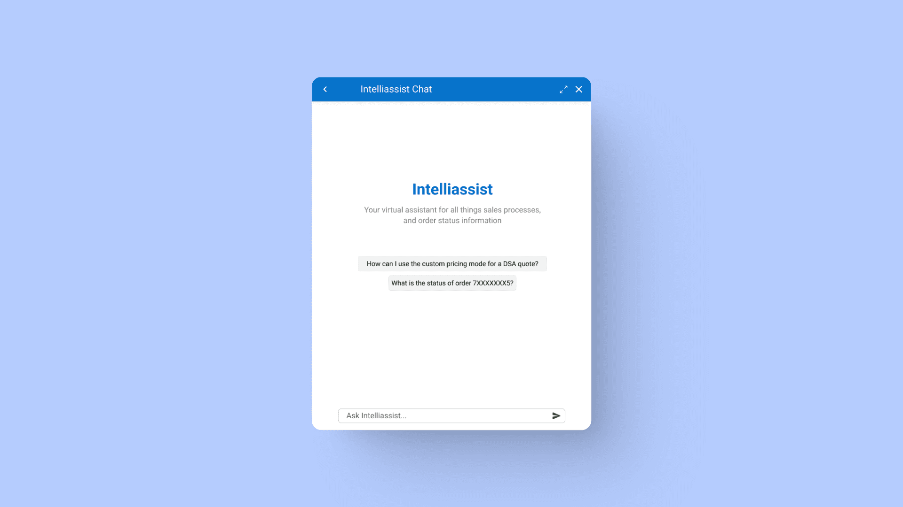
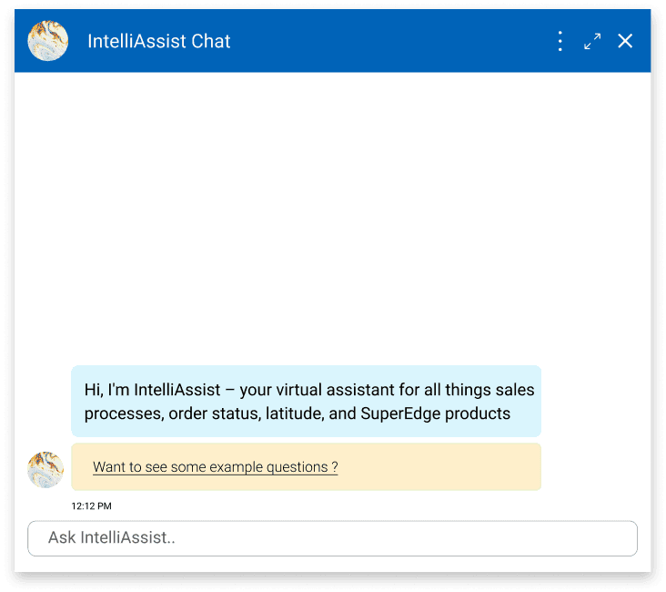
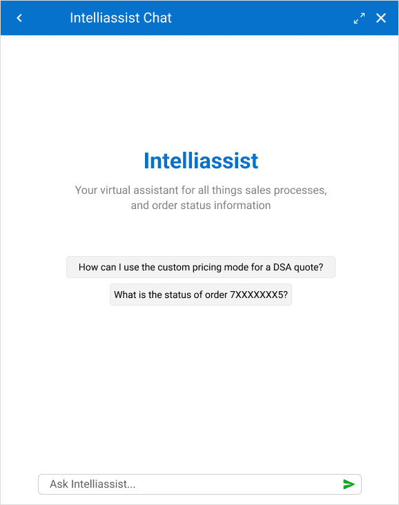
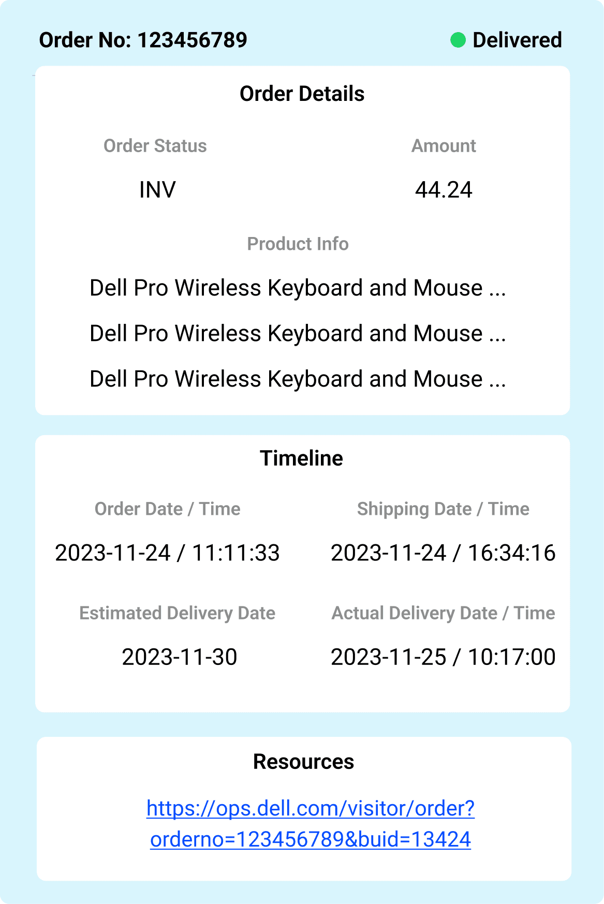
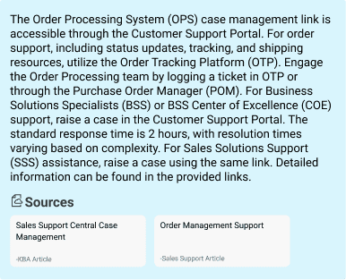
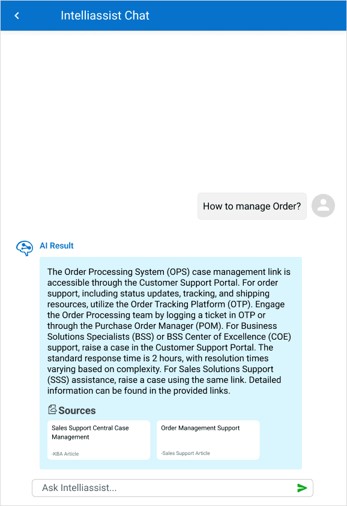

Dell sales reps were losing hours every week jumping between platforms to answer customer questions, find product info, or check order status. The information was there. Finding it was the problem.
IntelliAssist, an AI-powered chat interface that consolidates six+ tools into one place. Users ask in natural language and get verified answers with sources attached, so they can trust what they read and move on.

Dell sales reps relied on at least six platforms to do their jobs: a knowledge base, order systems, support docs, internal wikis, ticketing tools, and product spec sheets. Answering a single customer question often meant context-switching three or four times. The information existed; the workflow around it was broken.
IntelliAssist is an AI-powered assistant that lets Dell employees ask questions in plain language and get verified answers, with the underlying sources surfaced for review. The why is the part most AI projects skip: this is replacing six tools, so trust is the foundation.
An AI chatbot that gives Dell employees instant answers to their questions and streamlines access to information that used to be scattered across at least six platforms.
Employees navigated multiple platforms daily to access sales details and customer data. IntelliAssist consolidates the answer layer, providing instant accurate replies about Dell processes with sources attached for verification.
I ran in-depth interviews with five Dell employees, sales reps, data analysts, and project managers, to understand their daily workflows, friction points, and the specific moments when the platform sprawl cost them time. Four pain points kept surfacing across roles.
Constant switching between systems hampered productivity. The information was scattered and the cost of accessing it added up.
"Navigating between so many different platforms to find the information I need is a constant time sink and a major source of frustration." Sales Representative
Internal processes (order management, troubleshooting, policy lookups) were hard to navigate. Users couldn't tell where to start or who to ask.
"Some of our internal processes are so complicated that it's hard to know where to start or who to ask for help." Sales Representative
Keyword searches in the knowledge base often returned irrelevant results. Users sifted through long documents to find specific technical details.
"It can take me hours to find the right information, especially when I'm looking for something very specific or technical." Project Manager
Users wanted to resolve issues on their own without escalating to colleagues or support teams. Autonomy mattered, especially on tight deadlines.
"I would love to have a tool that could instantly answer my questions, especially when I'm working on a tight deadline." Data Engineer

Two interface directions, both viable. I balanced user feedback, brand guidelines, and engineering feasibility, and converged on Option B. The deciding factor: sales reps needed quick answers, not more clicks. Hiding sample prompts behind a tap added an interaction cost they didn't have time for.
The business loved the yellow tile for sample questions, so we kept it. Turns out, that pop of color isn't just visual flavor: it guides attention to the right first action without breaking the rest of Dell's brand. A small compromise for a big clarity win.

The shipped IntelliAssist focused on three things that mattered for trust: making prompts discoverable, color-coding the conversation so users always know who said what, and attaching sources to every answer so verification takes a click, not a search.
Sample questions sit visibly above the input. Users see what kinds of things they can ask without having to read a tutorial. First-time anxiety drops; adoption climbs.

Two patterns shape every response. Conversations are color-coded by speaker (user vs. AI) so the back-and-forth stays readable. And structured replies (like order status) use a custom template that surfaces critical info first: status, key details, progress, then drill-down links. Users assess and move on without re-reading.

Every AI response surfaces the knowledge base articles and support resources it drew from. Users validate in a click, building trust in the tool over time and learning the underlying systems by following the trail.

Initial launch data from pilot groups and post-launch telemetry showed IntelliAssist delivered on the core promises: usability, time savings, self-service, and confidence in the answers. Sampled across two weeks of post-launch traffic and 18 observed workflows.
The pilot group rated IntelliAssist 78 on the System Usability Scale. Most-cited phrase in qualitative feedback: "intuitive guidance," with a noted drop in first-time user anxiety.
Task completion rate for core workflows (order status checks, policy lookups, troubleshooting). Users saved ~3.2 minutes per task versus manual search.
58% of inquiries resolved without human support on first try. Repeat users hit a 72% self-resolution rate, an early indicator of learnability and growing trust.
68% of users reported higher confidence in task outcomes when using IntelliAssist versus their previous workflow.
Designing an AI tool inside a Fortune 500 means working around tight timelines, compliance rules, and capability gaps that aren't documented anywhere. Three constraints shaped the MVP scope; I held the line on shipping something that worked for sales reps first, then expanding.
Accelerated timelines prioritized MVP delivery over exploratory research.
Restricted access to cross-departmental users and historical data due to compliance policies.
Early-stage AI capabilities lacked clear technical boundaries, creating design ambiguity around what could ship.
These limits narrowed the initial scope but forced sharper prioritization on features that delivered immediate ROI for sales teams. Future phases will expand validation to address gaps in cross-role adoption (engineering, support) and long-term behavior patterns (90-day retention).